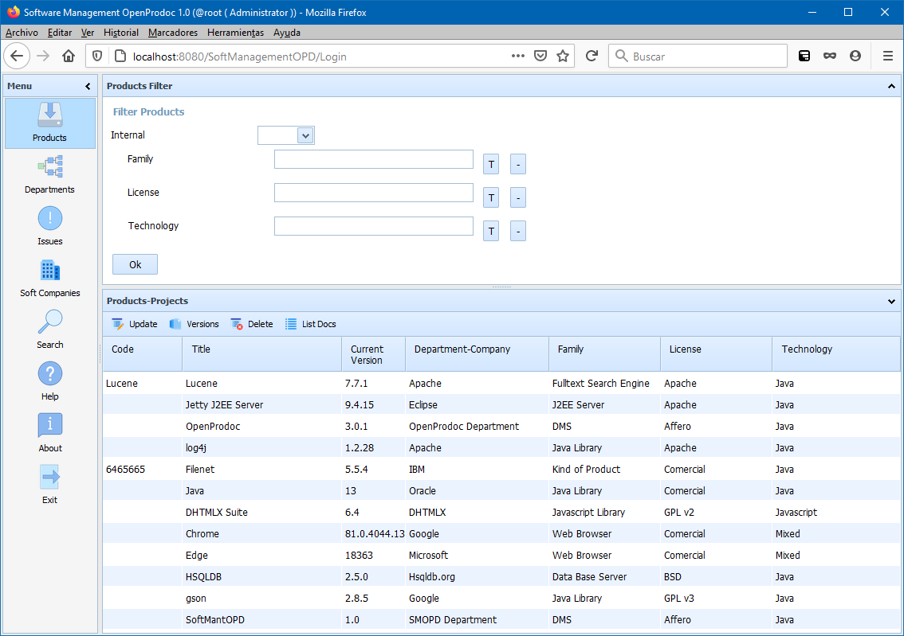

Help SMO Departments
The departments section allows to manage the departments that build internally products or libraries and have contact information and description of their functions.
The departments didn't need to be at the same level of the organization of the company, they could be in their real "position", that is under different directions or area.
SMO will display them independently of the position and allow to modify them.
However, the the position is in different branches of the company structure, they will need to be created from OpenProdoc selecting the specific folder.
Additionally, it's possible to "hide" to some users any department from the SMO list using the OpenProdoc ACLs. This allow to "hide" departments that didn't develop software o that develop some restricted software.
Those departments only will visible for authorized users.
With the default configuration, the filter area of the products will show four filters:
- Internal:Filter by internal or external products.
- Family:Filter by the family or kind of product (Database, O.S., Communications Library, Machine Learning Library, ...)
- License:Filter by the type of License (Comercial, Open Source, GPL, Affero, BSD,..)
- Technology:Filter by the technology of the product (Java, Javascript, .Net,binary,...)
With the default configuration, the list area display the columns:
- Code:Internal or external code of the product.
- Tille-Name:name of the product
- Current Version:Current version published, installed or used
- Department/Company:Department or company author-responsible of the product
- Family:Family or kind of product (Database, O.S., Communications Library, Machine Learning Library, ...)
- License:Type of License (Comercial, Open Source, GPL, Affero, BSD,..)
- Technology:Technology of the product (Java, Javascript, .Net,binary,...)
Selecting a products, and always if the secutiry permissions asigned allow it, it is possible to use the options:
- Update: Displays a form for updating the selected product.
- Versions: Displays the list of versions of the selected product.
- Delete: Displays a form for confirmation before deleting the selected product and ALL its versions, folders and documents.
- List Documents: Displays a form for maintenance of all the documents and folders structure under the selected product.

In SMO Tree there is a complete view of operations and forms.